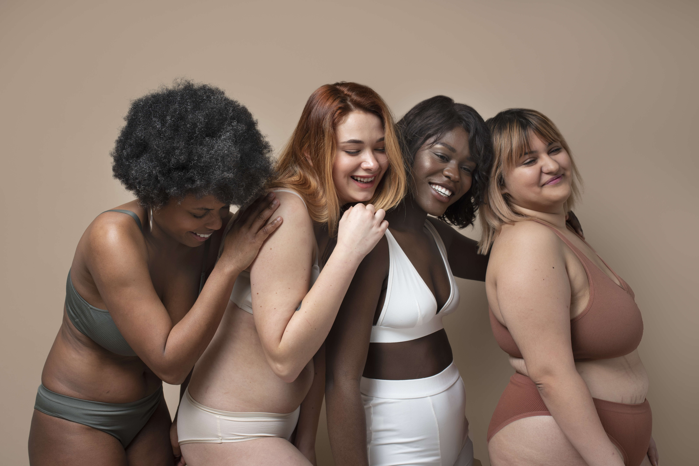
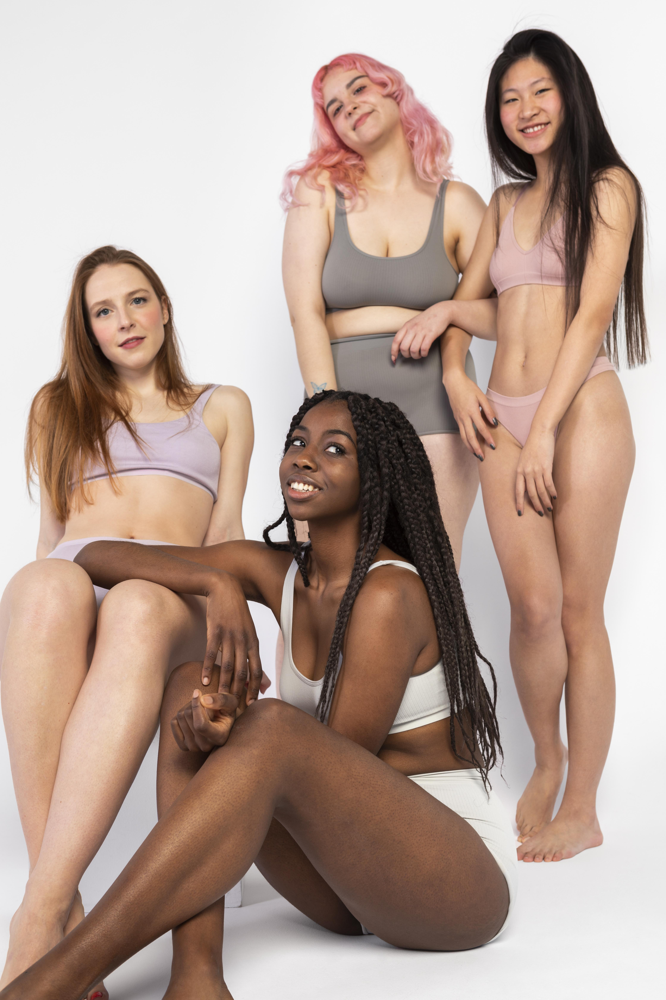
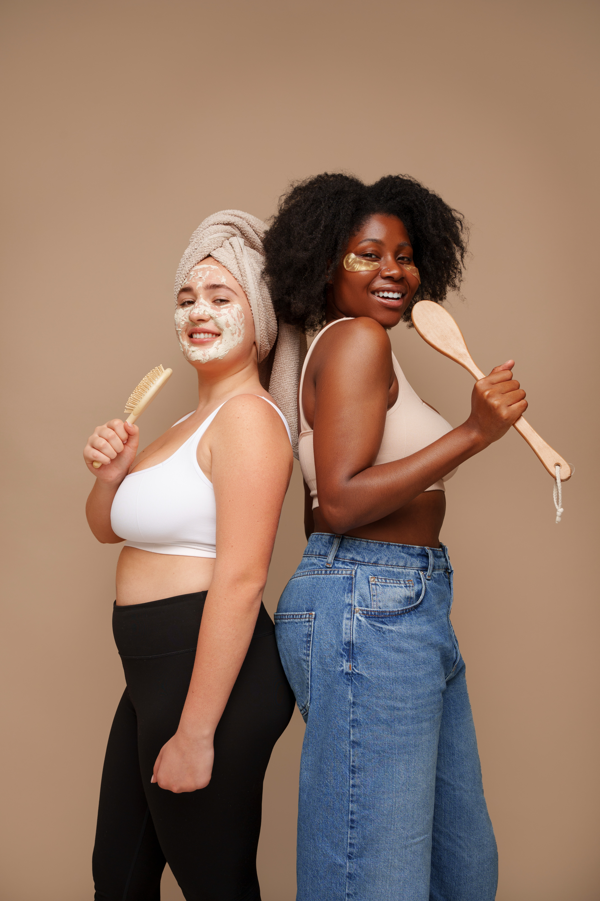
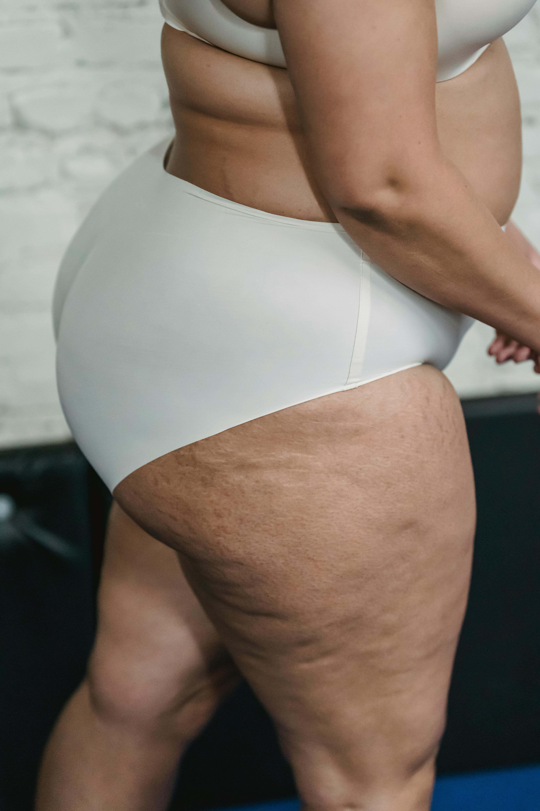
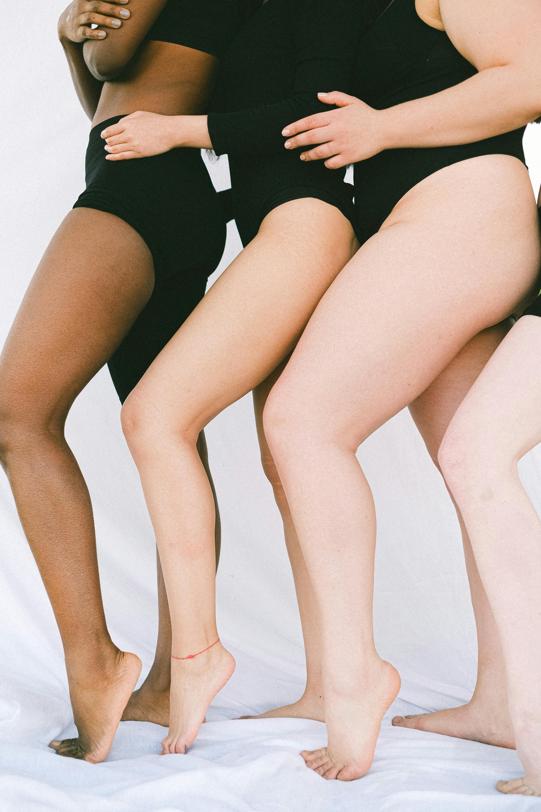
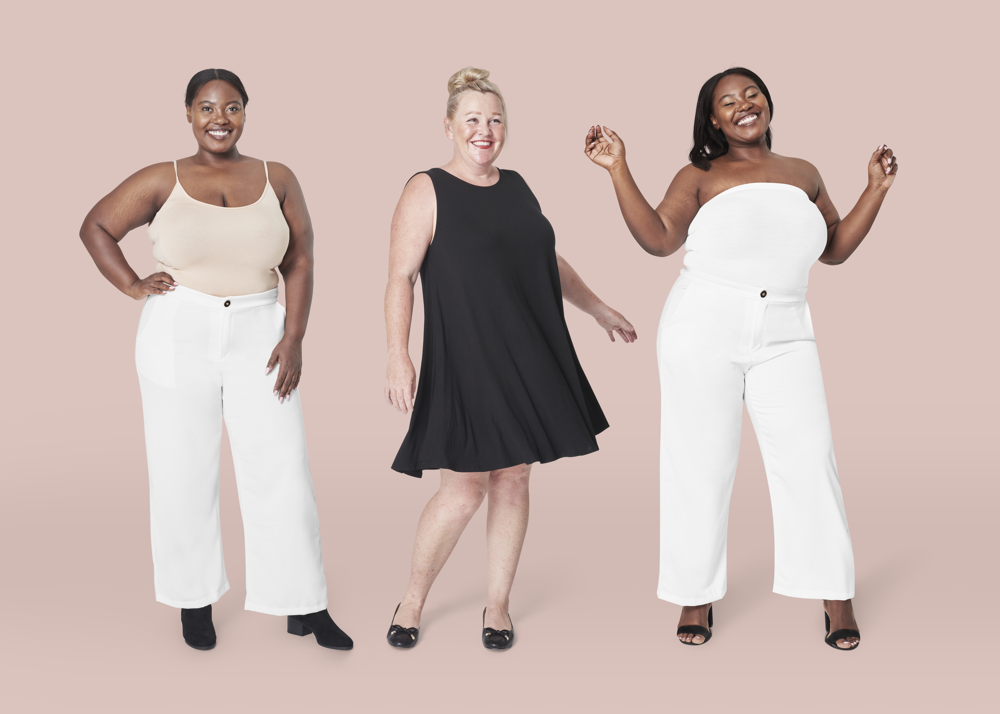

A tendência de 2026 rompe definitivamente com padrões rígidos e idealizações ultrapassadas, abraçando a diversidade corporal de forma ampla e consciente. A moda passa a refletir a verdade dos corpos reais, sem filtros, correções ou tentativas de padronização, valorizando diferentes formas, volumes e expressões. Mais do que estética, esse movimento destaca autonomia, identidade e liberdade de escolha, transformando o vestir em um gesto de afirmação pessoal e autenticidade.
A moda e a beleza celebram o corpo como ele é, reafirmando a singularidade de cada pessoa e devolvendo o direito de ocupar sua forma com orgulho, liberdade e autenticidade. Elas rompem padrões limitantes, abraçam a diversidade e transformam a expressão individual em um ato de empoderamento e inclusão.



As peças são pensadas para acompanhar o movimento natural de cada corpo. Tecidos fluidos, modelagens inteligentes e caimentos que valorizam volumes reais substituem a lógica de “disfarçar”. A roupa vira narrativa pessoal. Os acessórios deixam de ser truques e passam a expressar quem cada pessoa é. Materiais naturais, pedras brasileiras, formas orgânicas e peças grandes ou delicadas reforçam identidade, não proporção.

A maquiagem é pensada para acompanhar a expressão natural de cada rosto. Texturas leves, acabamentos inteligentes e cores que dialogam com a pele real substituem a ideia de “corrigir”. O rosto vira narrativa pessoal. Os produtos deixam de ser truques e passam a revelar identidade. Pigmentos minerais, tons brasileiros, traços orgânicos e escolhas que vão do marcante ao sutil reforçam quem cada pessoa é — não padrões a seguir.